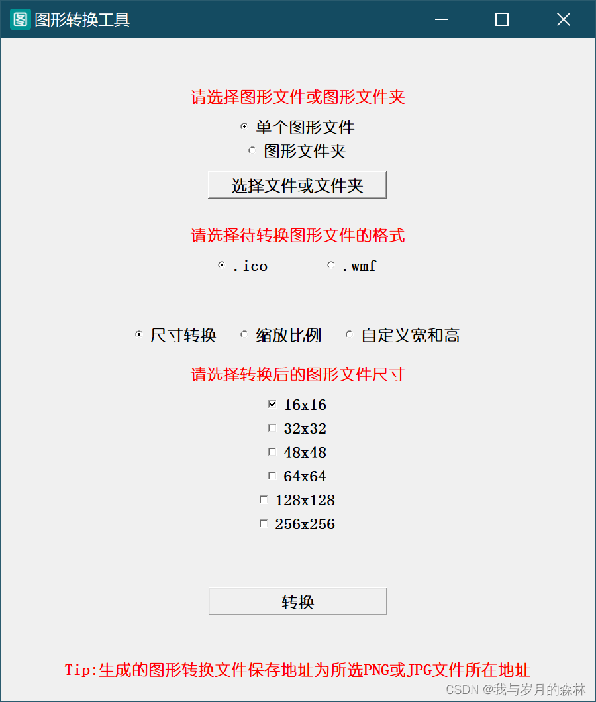

【小巧-轻便-实用】ICO图标转换工具
更新于|小工具
|浏览量:
工具名称： 图形转换工具
工具版本： 1.03
功能介绍：
- 支持PNG、JPEG格式转为ICO图标或WMF格式图片
- 可以选择单个图形文件，也可以选择图形文件夹进行批量处理
- 可以选择常见尺寸、倍率、自定义宽和高对ICO图标和WMF图片进行缩放
工具截图：

下载链接： GitHub 百度网盘（提取码：1314）
文章作者: 我与岁月的森林
版权声明: 本博客所有文章除特别声明外，均采用 CC BY-NC-SA 4.0 许可协议。转载请注明来源 我与岁月的森林的博客！
相关推荐
2026-01-16
【小巧-轻便-实用】屏幕取色器
Release【v1.0】工具名称： 屏幕取色器（Color Picker） 工具版本： 1.0 功能介绍： 1.可以控制取色器的启用和禁用；2.可以快速复制当前颜色信息数值；3.可以切换颜色信息显示模式，包括颜色的十六进制、HSL、HSV和RGB；4.可以切换中英文语言版本。 工具截图： 下载链接： 百度网盘（提取码：1314） 免责声明：由于本文内容未经过正规和严格的测试，可能存在错误，因此造成的损失均由使用者自行承担，对本文内容复制、下载、参考等引用行为即默认悉知并同意该声明。
2026-01-25
A-Star算法探索和实现（三）
A-Star算法探索和实现系列博文不具备参考价值，仅仅作为个人探索和尝试的记录！ 前言在上一篇中我们提出了四个问题，分别是： 障碍物生成出现“死胡同”问题，如何解决？ 障碍物生成在网格的对角顶点处，是否具有意义？ 路径周围存在障碍物时，按照对角线移动是否合理？ 查找最佳路径的方式，除了权值这个判断条件，还需要附加什么条件来辅助寻找最佳路径或者如何改进寻找最佳路径的方式？ 第一个问题针对的是随机生成的障碍物集合，是否存在使得起始点到终点的路径无解的情况，如果存在这种情况，我们就称其为“死胡同”问题，本篇我们将针对第一个问题进行探讨和解决。 分析这个问题本质上是要检测当前生成的BlockNode集是否合理，如果合理，我们就可以执行A*算法查找最佳路径，否则重新生成一组BlockNode集再次进行检测，直到生成合理的BlockNode集为止。我们可以通过预寻路的方式去检测当前BlockNode集是否合理，具体步骤如下： （1） 传入CurNode（初始为起始点Node），生成CurNode的NextNode集，生成BlockNode集。设CurNode坐标为（a，b），...
2026-01-16
Python打包窗口图标丢失修复工具
工具名称： Python打包窗口图标丢失修复工具（PackTool） 工具版本： 1.01 功能介绍： 能够将ico文件转换为二进制内容，然后将二进制内容保存在py文件中 能够将py文件中对应的二进制内容转换为ico文件 能够作为API进行直接调用 工具截图： 资源下载： GitHub百度网盘（提取码：1314） 免责声明：由于本文内容未经过正规和严格的测试，可能存在错误，因此造成的损失均由使用者自行承担，对本文内容复制、下载、参考等引用行为即默认悉知并同意该声明。
2026-01-25
A-Star算法探索和实现（一）
提醒：A-Star算法探索和实现系列博文不具备参考价值，仅仅作为个人探索和尝试的记录！ 什么是A-Star算法？A*搜寻算法俗称A星算法，又叫A-Star算法。A*算法是比较流行的启发式搜索算法之一，被广泛应用于路径优化领域（引用自百度百科）。在游戏开发中，我们可以将A*算法作为一种敌人的寻路算法，在伊庭齐志所著的《AI游戏开发和深度学习进阶》中有关于A*算法在各种游戏中的运用。如果对A-Star算法不是很了解，推荐浏览这两篇博文，一篇是英文原著，一篇是针对该英文原著的汉译版本。 英文原著 英文原著汉译版本 A-Star算法的思路A*算法要求寻找到从起始点到终点的最佳路径，从起始点开始，首先以起始点作为当前点，开始收集当前点下一步可前往的点，保存为一个点集并对这些点的权值进行计算，然后以权值最小的点作为下一步要前往的点，将该点设为当前点再重复上述过程，直至到达终点。 UML图 效果演示 代码Grid.py1234567891011121314151617181920212223242526272829303132333435363...
2026-01-25
A-Star算法探索和实现（二）
A-Star算法探索和实现系列博文不具备参考价值，仅仅作为个人探索和尝试的记录！ 前言上一篇我们完成了A-Star算法的基本实现，在无障碍的情况下去寻找最佳路径，而在本篇我们将在此基础上增加障碍物，让算法能够在有障碍物的条件下去寻找到最佳路径。 分析我们需要考虑以下几个问题： 第一，我们知道Node类对应的是网格单元，而每个障碍物需要对应一个网格单元，那么如何选择生成障碍物的Node？ 第二，在视图层的Grid类中，如何呈现生成的障碍物？ 第三，生成障碍物后，SearchPath类中寻找路径的方法需要作出哪些改变？ 根据问题，我们提出以下解决思路： （一）第一个问题的解决思路 我们可以给Node类添加一个nodeTag属性，并且设置将该属性设定为枚举类型，分为可通过的Node为PATHNODE，障碍物的Node为BLOCKNODE。首先我们进行障碍物Node的生成，我们需要告诉生成方法需要生成的障碍物的数量p_count，在生成方法中需要对Node作一个简单的判断，如果Node不为起始点Node和终点Node才存入Node集，然后返回生成好的Node集，依次遍历Node集，并...
2026-01-25
A-Star算法探索和实现（五）
A-Star算法探索和实现系列博文不具备参考价值，仅仅作为个人探索和尝试的记录！ 前言在上一篇中我们对寻路的移动规则进行了制定，而在本篇我们将对最佳路径的查找方式进行优化，而这就会涉及到移动规则的检测改进、权值计算的改进、NextNode集的处理改进、寻路逻辑的改进，我们将从上述四个方面进行详细讲解。 分析移动规则的检测改进：可移动检测、可替换斜向移动检测、可替换二次非斜向移动检测、方向Node集检测（1）可移动检测：检测当前Node的NextNode集中是否存在可以移动的下一步Node，这个基本的检测用于判断下一步是否可行。 （2）可替换斜向移动检测：检测是否存在一次斜向移动可替换两次非斜向移动的情况，如果存在，则进行替换，两次非斜向移动的权值高于一次斜向移动的权值，所以通过这个方式来优化最佳路径查找方式。 （3）可替换二次非斜向移动检测：检测是否存在二次斜向移动可替换为二次非斜向移动，如果存在，则进行替换，一次斜向移动的权值高于一次非斜向移动的权值，所以通过这个方式来优化最佳路径查找方式。 （4）方向Node集检测：检测当前Node的NextNode集中是否存在上一步No...
评论